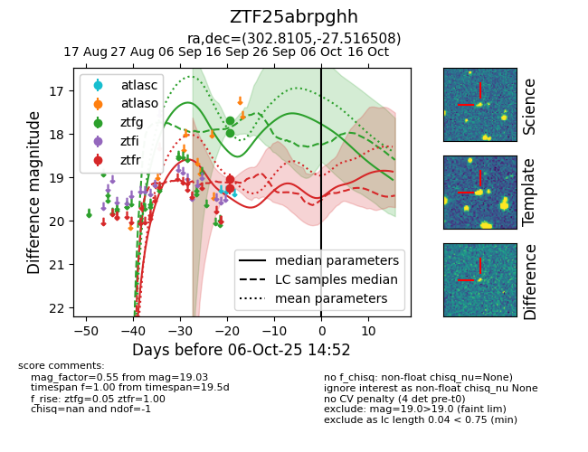

FINK: ZTF25abrpghh
Lasair: ZTF25abrpghh
ALeRCE: ZTF25abrpghh
ZTF25abrpghh (ztf,fink)
equatorial (ra, dec) = (302.8105,-27.51651)
galactic (l, b) = (14.7878,-28.68494)

last ztfg=17.97, ztfr=19.03
2 ztfg, 2 ztfr detections